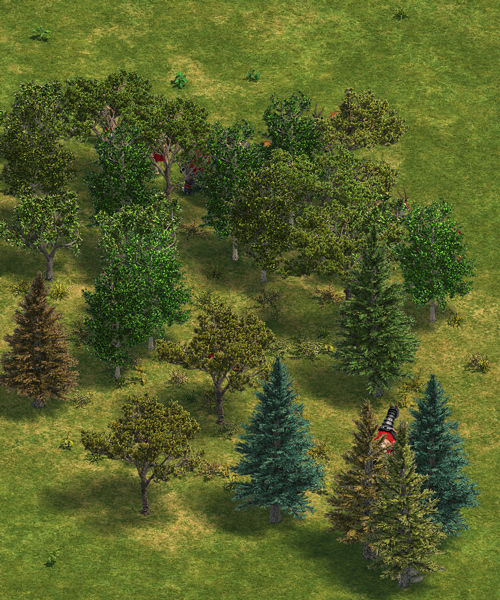

Tree Draw Level
Changing draw level of all trees to a lower level so that all units behind trees can be seen.
Hitting gazelles behind trees was too hard.
This is a data mod and therefore it only works with a specified versions of the game, these version are:
- Age of Empires Rise of Rome; User Patch; RM Brawl
- Age of Empires Definitive Edition; RM Brawl
- Age of Empires Definitive Edition v46777
These data mods are included in the mod files which you can download from home page.
